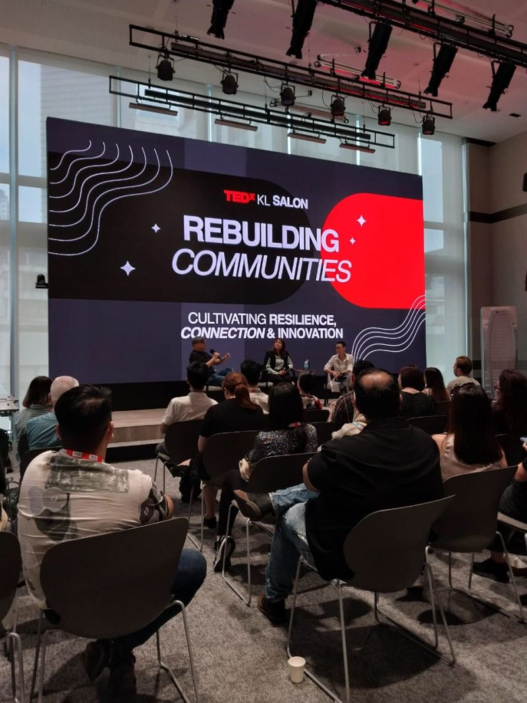
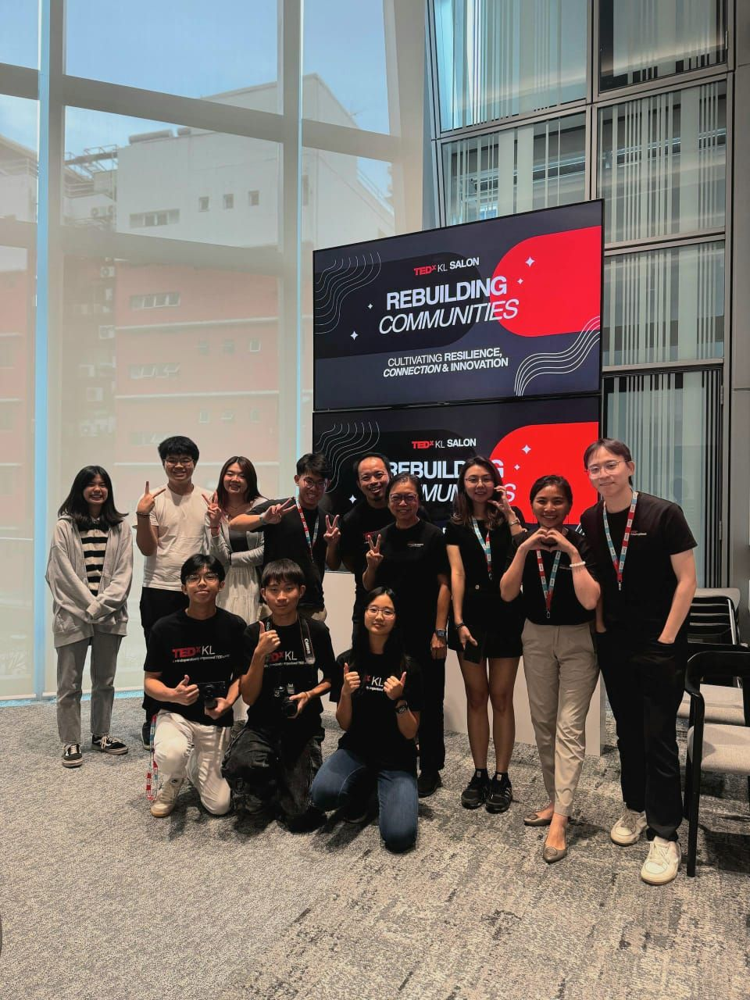
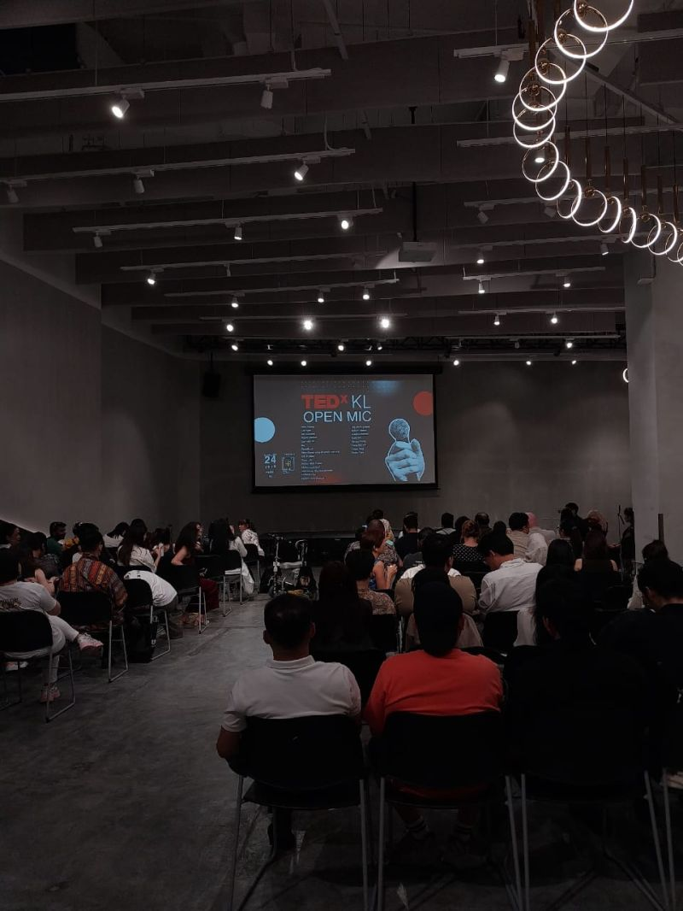
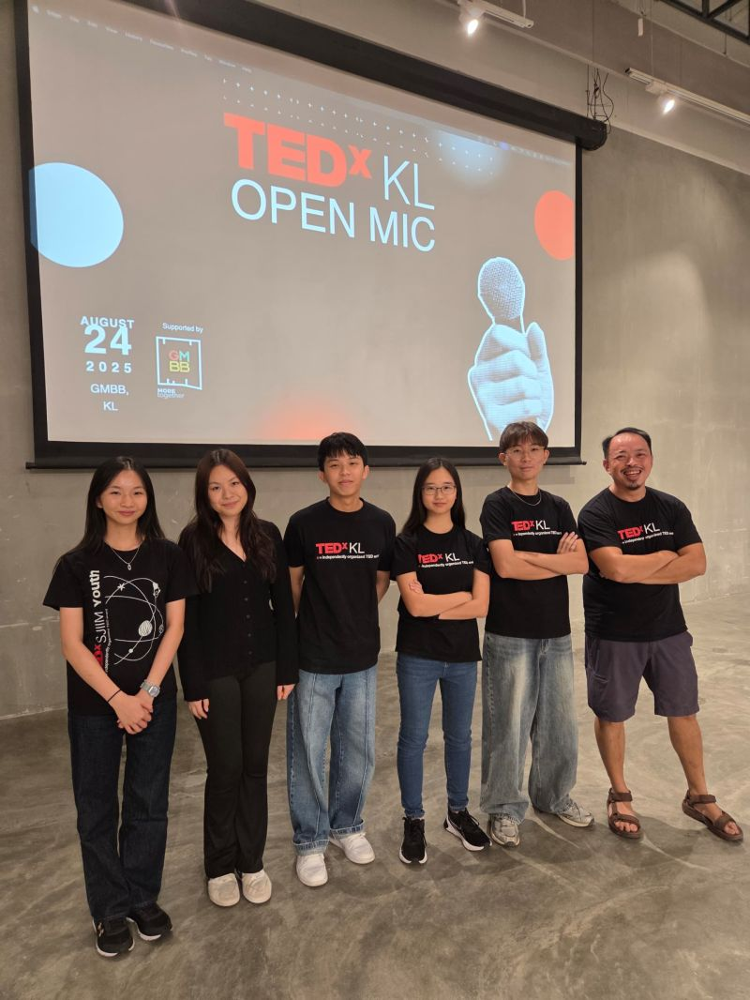
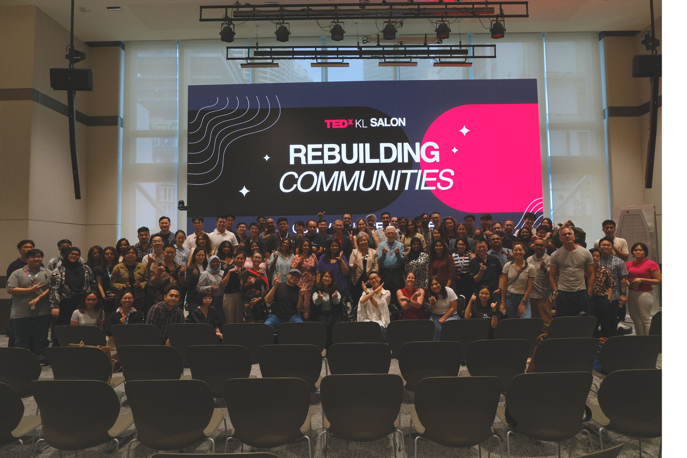

TEDxKL
(Re)building Communities: Confluence
Project Details / Background
I've been involved with TEDx for around 3 years now. Starting in 2023, I've always wanted to put together a TEDx event, not only because it
sounds super duper cool, but also because I genuinely wanted to meet more people from around Malaysia. Being part of a relatively small international school meant
that my network wasn't massive, and I really did want to pick the brains of awesome people from all around Malaysia.
I started with TEDxSJIIM Youth: a student-led event that garnered an audience of around 100 parents and students, involving people from a variety
of different fields. We mainly had entrepreneurs and lots of professors who were kind enough to give up their weekend to share some of their wisdom with us.
But I've always wanted to build bigger and to build better. It occured to me that, during my time in Malaysia, I hadn't heard of a state-wide or
nation-wide TEDx event. After some googling, I realised that after COVID, it was difficult to get lots of these events started back up again. I reached out anyway to
a guy I came across when doing my searches: Daniel. I am ever grateful for his warmth and willingness to involve me (and later on, my team) in the process of putting
together TEDxKL for 2025. It is, of course, a huge leap of faith for him to trust a couple of 16-17 year-olds with putting together an event involving up to 500 people!
The first event I helped out with was the TEDxKL Salon, where we had a panel of speakers talking about rebuilding communities. It truly made me wonder
what it was that created the connections, trust, and innovation that help communities thrive. It made me wonder how people are going about making sure that the communities
they build are ones that last. More importanlty, perhaps, how can these communities be rebuilt and strengthened post-COVID?
Volunteering at this event and helping organise it was an incredibly rewarding experience, and it was amazing to see so many communities within Malaysia represented at
there (including other Malaysian TEDx events like TEDxPetalingStreet and TEDxNottinghamMalaysia)!
More recently was the TEDxKL Open Mic. I can only say I left more inspired than I could have imagined. The event was truly a reminder that some o
f the most powerful ideas often come from everyday people with the courage to step up and share their stories. There really was something for everyone,
whether that be very vulnerable personal experiences to new insights on recent scientific developments. The event gave me a whole new appreciation for the amount of
planning and teamwork that goes into creating a space where people feel safe to speak their truth.
Up next, of course, is the actual mainstage event. I'm super excited to be helping out with TEDxKL 2025: Confluence. This will be happening on the 15th
of November (Saturday), 2025 from 12pm to 5pm at REXKL, so please use this link to register and book your seat!
As always, I remain immensely grateful to the people who have taught me so much and who have allowed me to volunteer, including Daniel, Nathalia, Shalini,
and the rest of my team (Kevin, Jaden, Iris, Chloe, Keith etc.)
Image Gallery




